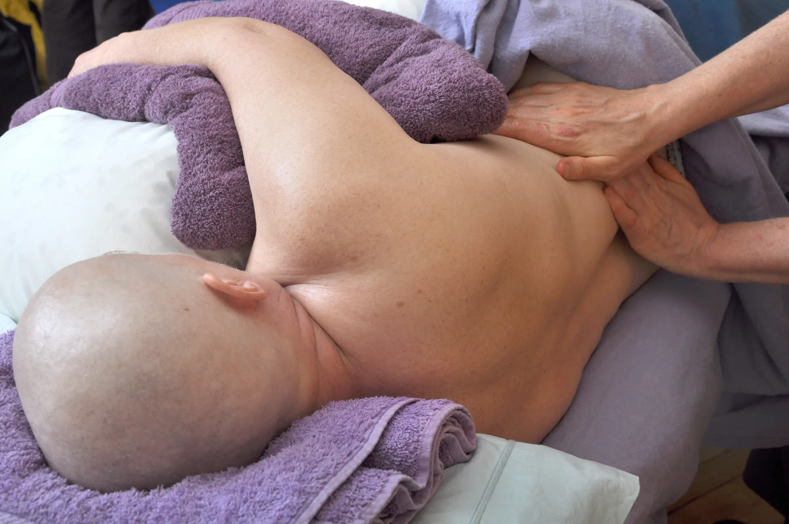
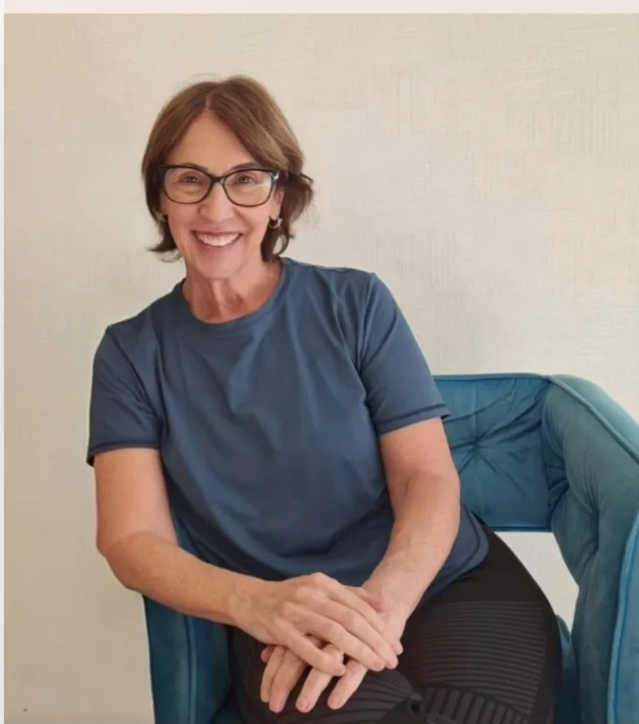
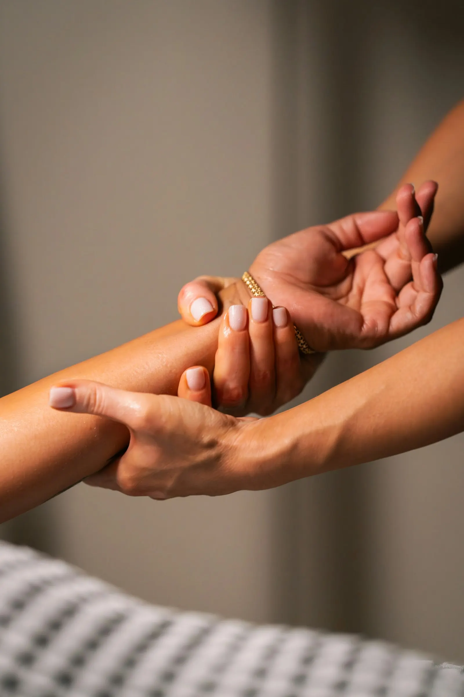
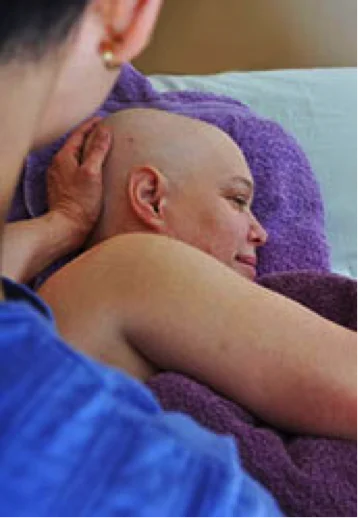
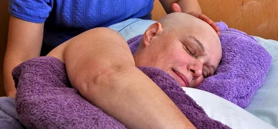
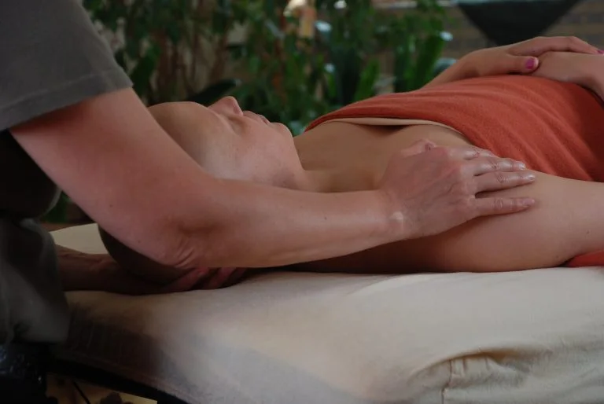
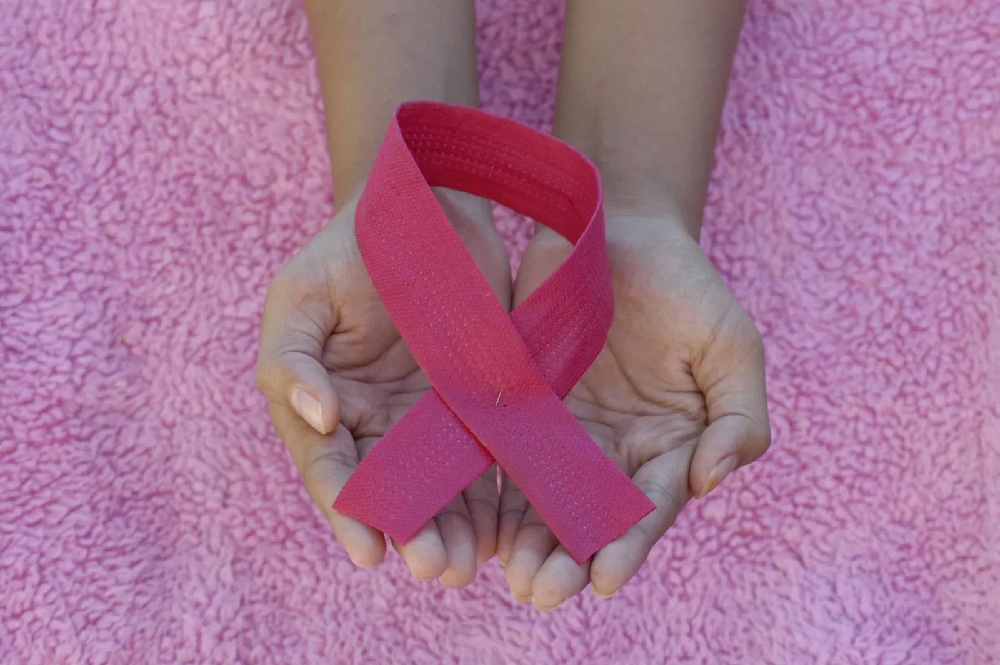
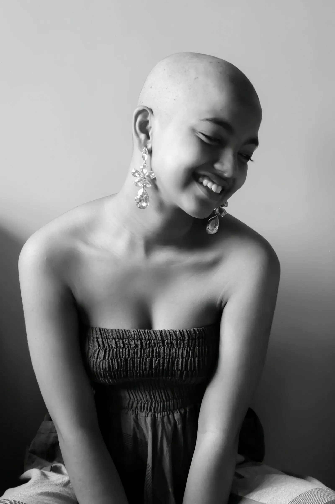

Menos ansiedade
O corpo sai do estado de alerta. Respiração mais lenta, mente mais quieta, um respiro no meio da rotina de consultas e exames.

Um toque seguro, delicado e adaptado para quem está em tratamento contra o câncer ou já passou por ele. Alívio, acolhimento e mais qualidade de vida, respeitando o momento e a história de cada pessoa.

Cuidar de quem enfrenta o câncer pede mais do que boas mãos. Pede conhecimento, sensibilidade e responsabilidade. A Evelyn foi buscar essa formação em São Paulo, com Rosana Ades, uma das grandes referências da massagem oncológica no Brasil. Assim, ela se tornou pioneira em Cuiabá a se profissionalizar em massagem oncológica.
Hoje ela é
Massoterapeuta Integrativa e Oncológica
A base de tudo: entender a doença, os tratamentos e os cuidados que cada fase pede, para saber quando e como tocar com segurança.
Em São Paulo, o estudo virou toque. Cada técnica foi praticada de perto, com a orientação de quem dedica a vida a cuidar de pacientes oncológicos.
A primeira em Cuiabá a se profissionalizar em massagem oncológica. Agora ela leva esse cuidado para as pacientes da cidade, unindo a nova formação à experiência de anos em terapias integrativas.

Massoterapeuta integrativa em São Paulo e fundadora da Vitaluz Sala de Cuidar, a Rosana é pioneira em massagem oncológica no Brasil e dedica mais de três décadas ao cuidado de pessoas.

A massagem oncológica é uma massagem adaptada para pessoas com câncer, em tratamento ou depois dele. Não é uma técnica única: é uma forma de trabalhar. Pressão, posição, duração e regiões do corpo são ajustadas conforme o tratamento, os exames e como a pessoa está se sentindo naquele dia.
O objetivo é aliviar desconfortos, acalmar o corpo e a mente e devolver à paciente a sensação de ser tocada com carinho, num período em que o toque costuma ser quase só de procedimentos médicos.
Benefícios que as pacientes costumam sentir, e que estudos com pessoas em tratamento oncológico vêm mostrando.
O corpo sai do estado de alerta. Respiração mais lenta, mente mais quieta, um respiro no meio da rotina de consultas e exames.
Com o corpo relaxado, fica mais fácil descansar. E descansar faz diferença na recuperação.
Ajuda a diminuir tensões, dores musculares e a sensação de corpo pesado que o tratamento pode trazer.
Pode suavizar a fadiga do dia a dia, um dos efeitos mais comuns e mais difíceis do tratamento.
Depois de cirurgias e mudanças na imagem, o toque respeitoso ajuda a voltar a se sentir em casa no próprio corpo.
Um momento só seu, sem pressa, em que você é cuidada como pessoa, não como diagnóstico.
Cada corpo responde de um jeito. Os resultados variam de pessoa para pessoa.
Na massagem oncológica, o toque vai além do físico. É acolhimento, é presença, é respeito à história de cada pessoa.Evelyn Aguirre
Toda sessão é planejada para o seu momento. Nada é feito no automático.


Quimioterapia, radioterapia ou hormonioterapia, com as adaptações que cada fase pede.

Quando a equipe médica liberar, para ajudar o corpo a relaxar e a se reencontrar.

Para quem terminou e quer cuidar do corpo e da mente nessa nova etapa da vida.
Familiares e cuidadores também se cansam. Também merecem um momento de cuidado.
Você chama no WhatsApp e conta um pouco da sua história, sem compromisso.
Conversamos sobre o tratamento, os exames e a liberação médica.
Ambiente calmo, toque delicado e tudo ajustado ao seu corpo naquele dia.
A cada encontro, o cuidado se ajusta à fase em que você está.

Você não precisa atravessar isso sozinha.
O tratamento cuida da doença. A massagem oncológica cuida de você: do cansaço, da tensão, do medo que fica no corpo. Um espaço de calma, de escuta e de toque respeitoso, para lembrar que você continua sendo muito mais do que um diagnóstico.
Quero conversarA Evelyn vai abrir curso e mentoria de massagem oncológica para Cuiabá e região. Uma formação para quem quer cuidar de pacientes oncológicos com técnica, segurança e sensibilidade.
Teoria e prática em grupo, com acompanhamento de perto em cada manobra, para você sair pronta para atender com segurança.
Para quem já atua e quer orientação direta: tirar dúvidas de casos, ajustar a técnica e estruturar o atendimento oncológico.
Esse é um medo muito comum, mas não há evidência científica de que a massagem espalhe o câncer. O que existe são cuidados específicos, como não massagear a região do tumor e adaptar a pressão, e é exatamente isso que a massagem oncológica faz.
Sim. Antes de começar, pedimos que você converse com o seu médico. Isso garante que a sessão seja segura para o seu momento.
Na maioria dos casos, sim, com adaptações. Alguns dias pedem mais cuidado, como logo após uma sessão de quimio ou com exames alterados. Por isso conversamos antes de cada atendimento.
Não. O toque é suave e você pode pedir para ajustar ou pausar a qualquer momento. A ideia é que você saia mais leve do que chegou.
O linfedema já instalado precisa de acompanhamento da sua equipe médica e de profissional especializado. A massagem oncológica respeita esse tratamento e não o substitui. Conte para a Evelyn se você tem linfedema, para a sessão ser adaptada.
Em Cuiabá MT, de segunda a sábado, das 14h às 19h, com horário agendado. Chame no WhatsApp para combinar.
Porque todo cuidado importa.
Se você, ou alguém que você ama, está passando pelo tratamento, a Evelyn está pronta para acolher. Chame para conversar.
Agendar pelo WhatsApp(65) 98123-2651 · Cuiabá MT · Segunda a sábado, 14h às 19h